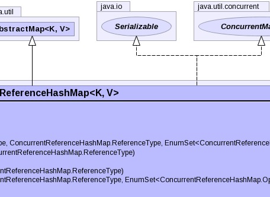
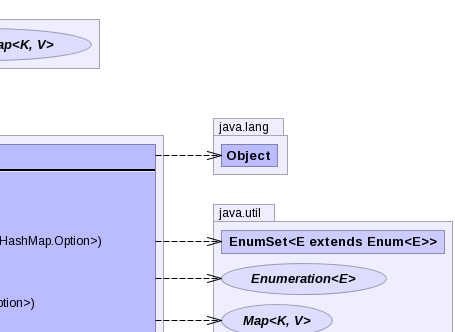
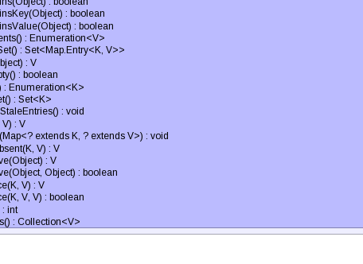

- java.lang.Object
-
- java.util.AbstractMap<K,V>
-
- org.ihtsdo.otf.tcc.model.jsr166y.ConcurrentReferenceHashMap<K,V>
-
- Type Parameters:
K- the type of keys maintained by this mapV- the type of mapped values
- All Implemented Interfaces:
- Serializable, ConcurrentMap<K,V>, Map<K,V>
public class ConcurrentReferenceHashMap<K,V> extends AbstractMap<K,V> implements ConcurrentMap<K,V>, Serializable
An advanced hash table supporting configurable garbage collection semantics of keys and values, optional referential-equality, full concurrency of retrievals, and adjustable expected concurrency for updates. This table is designed around specific advanced use-cases. If there is any doubt whether this table is for you, you most likely should be usingConcurrentHashMapinstead. This table supports strong, weak, and soft keys and values. By default keys are weak, and values are strong. Such a configuration offers similar behavior toWeakHashMap, entries of this table are periodically removed once their corresponding keys are no longer referenced outside of this table. In other words, this table will not prevent a key from being discarded by the garbage collector. Once a key has been discarded by the collector, the corresponding entry is no longer visible to this table; however, the entry may occupy space until a future table operation decides to reclaim it. For this reason, summary functions such as size and isEmpty might return a value greater than the observed number of entries. In order to support a high level of concurrency, stale entries are only reclaimed during blocking (usually mutating) operations. Enabling soft keys allows entries in this table to remain until their space is absolutely needed by the garbage collector. This is unlike weak keys which can be reclaimed as soon as they are no longer referenced by a normal strong reference. The primary use case for soft keys is a cache, which ideally occupies memory that is not in use for as long as possible. By default, values are held using a normal strong reference. This provides the commonly desired guarantee that a value will always have at least the same life-span as it's key. For this reason, care should be taken to ensure that a value never refers, either directly or indirectly, to its key, thereby preventing reclamation. If this is unavoidable, then it is recommended to use the same reference type in use for the key. However, it should be noted that non-strong values may disappear before their corresponding key. While this table does allow the use of both strong keys and values, it is recommended to useConcurrentHashMapfor such a configuration, since it is optimized for that case. Just likeConcurrentHashMap, this class obeys the same functional specification asHashtable, and includes versions of methods corresponding to each method of Hashtable. However, even though all operations are thread-safe, retrieval operations do not entail locking, and there is not any support for locking the entire table in a way that prevents all access. This class is fully interoperable with Hashtable in programs that rely on its thread safety but not on its synchronization details.Retrieval operations (including get) generally do not block, so may overlap with update operations (including put and remove). Retrievals reflect the results of the most recently completed update operations holding upon their onset. For aggregate operations such as putAll and clear, concurrent retrievals may reflect insertion or removal of only some entries. Similarly, Iterators and Enumerations return elements reflecting the state of the hash table at some point at or since the creation of the iterator/enumeration. They do not throw
ConcurrentModificationException. However, iterators are designed to be used by only one thread at a time.The allowed concurrency among update operations is guided by the optional concurrencyLevel constructor argument (default 16), which is used as a hint for internal sizing. The table is internally partitioned to try to permit the indicated number of concurrent updates without contention. Because placement in hash tables is essentially random, the actual concurrency will vary. Ideally, you should choose a value to accommodate as many threads as will ever concurrently modify the table. Using a significantly higher value than you need can waste space and time, and a significantly lower value can lead to thread contention. But overestimates and underestimates within an order of magnitude do not usually have much noticeable impact. A value of one is appropriate when it is known that only one thread will modify and all others will only read. Also, resizing this or any other kind of hash table is a relatively slow operation, so, when possible, it is a good idea to provide estimates of expected table sizes in constructors.
This class and its views and iterators implement all of the optional methods of the
MapandIteratorinterfaces.Like
Hashtablebut unlikeHashMap, this class does not allow null to be used as a key or value.This class is a member of the Java Collections Framework.
- Author:
- Doug Lea, Jason T. Greene
- See Also:
- Serialized Form
-

  
 
-
-
Nested Class Summary
Nested Classes Modifier and Type Class and Description static classConcurrentReferenceHashMap.Optionstatic classConcurrentReferenceHashMap.ReferenceTypeAn option specifying which Java reference type should be used to refer to a key and/or value.-
Nested classes/interfaces inherited from class java.util.AbstractMap
AbstractMap.SimpleImmutableEntry<K,V>
-
-
Constructor Summary
Constructors Constructor and Description ConcurrentReferenceHashMap()Creates a new, empty map with a default initial capacity (16), reference types (weak keys, strong values), default load factor (0.75) and concurrencyLevel (16).ConcurrentReferenceHashMap(ConcurrentReferenceHashMap.ReferenceType keyType, ConcurrentReferenceHashMap.ReferenceType valueType)Creates a new, empty reference map with the specified key and value reference types.ConcurrentReferenceHashMap(ConcurrentReferenceHashMap.ReferenceType keyType, ConcurrentReferenceHashMap.ReferenceType valueType, EnumSet<ConcurrentReferenceHashMap.Option> options)Creates a new, empty reference map with the specified reference types and behavioral options.ConcurrentReferenceHashMap(int initialCapacity)Creates a new, empty map with the specified initial capacity, and with default reference types (weak keys, strong values), load factor (0.75) and concurrencyLevel (16).ConcurrentReferenceHashMap(int initialCapacity, ConcurrentReferenceHashMap.ReferenceType keyType, ConcurrentReferenceHashMap.ReferenceType valueType)Creates a new, empty map with the specified initial capacity, reference types and with default load factor (0.75) and concurrencyLevel (16).ConcurrentReferenceHashMap(int initialCapacity, float loadFactor)Creates a new, empty map with the specified initial capacity and load factor and with the default reference types (weak keys, strong values), and concurrencyLevel (16).ConcurrentReferenceHashMap(int initialCapacity, float loadFactor, int concurrencyLevel)Creates a new, empty map with the specified initial capacity, load factor and concurrency level.ConcurrentReferenceHashMap(int initialCapacity, float loadFactor, int concurrencyLevel, ConcurrentReferenceHashMap.ReferenceType keyType, ConcurrentReferenceHashMap.ReferenceType valueType, EnumSet<ConcurrentReferenceHashMap.Option> options)Creates a new, empty map with the specified initial capacity, reference types, load factor and concurrency level.ConcurrentReferenceHashMap(Map<? extends K,? extends V> m)Creates a new map with the same mappings as the given map.
-
Method Summary
Methods Modifier and Type Method and Description voidclear()Removes all of the mappings from this map.booleancontains(Object value)Legacy method testing if some key maps into the specified value in this table.booleancontainsKey(Object key)Tests if the specified object is a key in this table.booleancontainsValue(Object value)Returns true if this map maps one or more keys to the specified value.Enumeration<V>elements()Returns an enumeration of the values in this table.Set<Map.Entry<K,V>>entrySet()Returns aSetview of the mappings contained in this map.Vget(Object key)Returns the value to which the specified key is mapped, ornullif this map contains no mapping for the key.booleanisEmpty()Returns true if this map contains no key-value mappings.Enumeration<K>keys()Returns an enumeration of the keys in this table.Set<K>keySet()Returns aSetview of the keys contained in this map.voidpurgeStaleEntries()Removes any stale entries whose keys have been finalized.Vput(K key, V value)Maps the specified key to the specified value in this table.voidputAll(Map<? extends K,? extends V> m)Copies all of the mappings from the specified map to this one.VputIfAbsent(K key, V value)Vremove(Object key)Removes the key (and its corresponding value) from this map.booleanremove(Object key, Object value)Vreplace(K key, V value)booleanreplace(K key, V oldValue, V newValue)intsize()Returns the number of key-value mappings in this map.Collection<V>values()Returns aCollectionview of the values contained in this map.-
Methods inherited from class java.util.AbstractMap
clone, equals, hashCode, toString
-
-
-
-
Constructor Detail
-
ConcurrentReferenceHashMap
public ConcurrentReferenceHashMap(int initialCapacity, float loadFactor, int concurrencyLevel, ConcurrentReferenceHashMap.ReferenceType keyType, ConcurrentReferenceHashMap.ReferenceType valueType, EnumSet<ConcurrentReferenceHashMap.Option> options)Creates a new, empty map with the specified initial capacity, reference types, load factor and concurrency level. Behavioral changing options such asConcurrentReferenceHashMap.Option.IDENTITY_COMPARISONScan also be specified.- Parameters:
initialCapacity- the initial capacity. The implementation performs internal sizing to accommodate this many elements.loadFactor- the load factor threshold, used to control resizing. Resizing may be performed when the average number of elements per bin exceeds this threshold.concurrencyLevel- the estimated number of concurrently updating threads. The implementation performs internal sizing to try to accommodate this many threads.keyType- the reference type to use for keysvalueType- the reference type to use for valuesoptions- the behavioral options- Throws:
IllegalArgumentException- if the initial capacity is negative or the load factor or concurrencyLevel are nonpositive.
-
ConcurrentReferenceHashMap
public ConcurrentReferenceHashMap(int initialCapacity, float loadFactor, int concurrencyLevel)Creates a new, empty map with the specified initial capacity, load factor and concurrency level.- Parameters:
initialCapacity- the initial capacity. The implementation performs internal sizing to accommodate this many elements.loadFactor- the load factor threshold, used to control resizing. Resizing may be performed when the average number of elements per bin exceeds this threshold.concurrencyLevel- the estimated number of concurrently updating threads. The implementation performs internal sizing to try to accommodate this many threads.- Throws:
IllegalArgumentException- if the initial capacity is negative or the load factor or concurrencyLevel are nonpositive.
-
ConcurrentReferenceHashMap
public ConcurrentReferenceHashMap(int initialCapacity, float loadFactor)Creates a new, empty map with the specified initial capacity and load factor and with the default reference types (weak keys, strong values), and concurrencyLevel (16).- Since:
- 1.6
- Parameters:
initialCapacity- The implementation performs internal sizing to accommodate this many elements.loadFactor- the load factor threshold, used to control resizing. Resizing may be performed when the average number of elements per bin exceeds this threshold.- Throws:
IllegalArgumentException- if the initial capacity of elements is negative or the load factor is nonpositive
-
ConcurrentReferenceHashMap
public ConcurrentReferenceHashMap(int initialCapacity, ConcurrentReferenceHashMap.ReferenceType keyType, ConcurrentReferenceHashMap.ReferenceType valueType)Creates a new, empty map with the specified initial capacity, reference types and with default load factor (0.75) and concurrencyLevel (16).- Parameters:
initialCapacity- the initial capacity. The implementation performs internal sizing to accommodate this many elements.keyType- the reference type to use for keysvalueType- the reference type to use for values- Throws:
IllegalArgumentException- if the initial capacity of elements is negative.
-
ConcurrentReferenceHashMap
public ConcurrentReferenceHashMap(ConcurrentReferenceHashMap.ReferenceType keyType, ConcurrentReferenceHashMap.ReferenceType valueType)
Creates a new, empty reference map with the specified key and value reference types.- Parameters:
keyType- the reference type to use for keysvalueType- the reference type to use for values- Throws:
IllegalArgumentException- if the initial capacity of elements is negative.
-
ConcurrentReferenceHashMap
public ConcurrentReferenceHashMap(ConcurrentReferenceHashMap.ReferenceType keyType, ConcurrentReferenceHashMap.ReferenceType valueType, EnumSet<ConcurrentReferenceHashMap.Option> options)
Creates a new, empty reference map with the specified reference types and behavioral options.- Parameters:
keyType- the reference type to use for keysvalueType- the reference type to use for values- Throws:
IllegalArgumentException- if the initial capacity of elements is negative.
-
ConcurrentReferenceHashMap
public ConcurrentReferenceHashMap(int initialCapacity)
Creates a new, empty map with the specified initial capacity, and with default reference types (weak keys, strong values), load factor (0.75) and concurrencyLevel (16).- Parameters:
initialCapacity- the initial capacity. The implementation performs internal sizing to accommodate this many elements.- Throws:
IllegalArgumentException- if the initial capacity of elements is negative.
-
ConcurrentReferenceHashMap
public ConcurrentReferenceHashMap()
Creates a new, empty map with a default initial capacity (16), reference types (weak keys, strong values), default load factor (0.75) and concurrencyLevel (16).
-
ConcurrentReferenceHashMap
public ConcurrentReferenceHashMap(Map<? extends K,? extends V> m)
Creates a new map with the same mappings as the given map. The map is created with a capacity of 1.5 times the number of mappings in the given map or 16 (whichever is greater), and a default load factor (0.75) and concurrencyLevel (16).- Parameters:
m- the map
-
-
Method Detail
-
isEmpty
public boolean isEmpty()
Returns true if this map contains no key-value mappings.
-
size
public int size()
Returns the number of key-value mappings in this map. If the map contains more than Integer.MAX_VALUE elements, returns Integer.MAX_VALUE.
-
get
public V get(Object key)
Returns the value to which the specified key is mapped, ornullif this map contains no mapping for the key.More formally, if this map contains a mapping from a key
kto a valuevsuch thatkey.equals(k), then this method returnsv; otherwise it returnsnull. (There can be at most one such mapping.)- Specified by:
getin interfaceMap<K,V>- Overrides:
getin classAbstractMap<K,V>- Throws:
NullPointerException- if the specified key is null
-
containsKey
public boolean containsKey(Object key)
Tests if the specified object is a key in this table.- Specified by:
containsKeyin interfaceMap<K,V>- Overrides:
containsKeyin classAbstractMap<K,V>- Parameters:
key- possible key- Returns:
- true if and only if the specified object is a key in this table, as determined by the equals method; false otherwise.
- Throws:
NullPointerException- if the specified key is null
-
containsValue
public boolean containsValue(Object value)
Returns true if this map maps one or more keys to the specified value. Note: This method requires a full internal traversal of the hash table, and so is much slower than method containsKey.- Specified by:
containsValuein interfaceMap<K,V>- Overrides:
containsValuein classAbstractMap<K,V>- Parameters:
value- value whose presence in this map is to be tested- Returns:
- true if this map maps one or more keys to the specified value
- Throws:
NullPointerException- if the specified value is null
-
contains
public boolean contains(Object value)
Legacy method testing if some key maps into the specified value in this table. This method is identical in functionality tocontainsValue(java.lang.Object), and exists solely to ensure full compatibility with classHashtable, which supported this method prior to introduction of the Java Collections framework.- Parameters:
value- a value to search for- Returns:
- true if and only if some key maps to the value argument in this table as determined by the equals method; false otherwise
- Throws:
NullPointerException- if the specified value is null
-
put
public V put(K key, V value)
Maps the specified key to the specified value in this table. Neither the key nor the value can be null.The value can be retrieved by calling the get method with a key that is equal to the original key.
- Specified by:
putin interfaceMap<K,V>- Overrides:
putin classAbstractMap<K,V>- Parameters:
key- key with which the specified value is to be associatedvalue- value to be associated with the specified key- Returns:
- the previous value associated with key, or null if there was no mapping for key
- Throws:
NullPointerException- if the specified key or value is null
-
putIfAbsent
public V putIfAbsent(K key, V value)
- Specified by:
putIfAbsentin interfaceConcurrentMap<K,V>- Returns:
- the previous value associated with the specified key, or null if there was no mapping for the key
- Throws:
NullPointerException- if the specified key or value is null
-
putAll
public void putAll(Map<? extends K,? extends V> m)
Copies all of the mappings from the specified map to this one. These mappings replace any mappings that this map had for any of the keys currently in the specified map.
-
remove
public V remove(Object key)
Removes the key (and its corresponding value) from this map. This method does nothing if the key is not in the map.- Specified by:
removein interfaceMap<K,V>- Overrides:
removein classAbstractMap<K,V>- Parameters:
key- the key that needs to be removed- Returns:
- the previous value associated with key, or null if there was no mapping for key
- Throws:
NullPointerException- if the specified key is null
-
remove
public boolean remove(Object key, Object value)
- Specified by:
removein interfaceConcurrentMap<K,V>- Throws:
NullPointerException- if the specified key is null
-
replace
public boolean replace(K key, V oldValue, V newValue)
- Specified by:
replacein interfaceConcurrentMap<K,V>- Throws:
NullPointerException- if any of the arguments are null
-
replace
public V replace(K key, V value)
- Specified by:
replacein interfaceConcurrentMap<K,V>- Returns:
- the previous value associated with the specified key, or null if there was no mapping for the key
- Throws:
NullPointerException- if the specified key or value is null
-
clear
public void clear()
Removes all of the mappings from this map.
-
purgeStaleEntries
public void purgeStaleEntries()
Removes any stale entries whose keys have been finalized. Use of this method is normally not necessary since stale entries are automatically removed lazily, when blocking operations are required. However, there are some cases where this operation should be performed eagerly, such as cleaning up old references to a ClassLoader in a multi-classloader environment. Note: this method will acquire locks, one at a time, across all segments of this table, so if it is to be used, it should be used sparingly.
-
keySet
public Set<K> keySet()
Returns aSetview of the keys contained in this map. The set is backed by the map, so changes to the map are reflected in the set, and vice-versa. The set supports element removal, which removes the corresponding mapping from this map, via the Iterator.remove, Set.remove, removeAll, retainAll, and clear operations. It does not support the add or addAll operations.The view's iterator is a "weakly consistent" iterator that will never throw
ConcurrentModificationException, and guarantees to traverse elements as they existed upon construction of the iterator, and may (but is not guaranteed to) reflect any modifications subsequent to construction.
-
values
public Collection<V> values()
Returns aCollectionview of the values contained in this map. The collection is backed by the map, so changes to the map are reflected in the collection, and vice-versa. The collection supports element removal, which removes the corresponding mapping from this map, via the Iterator.remove, Collection.remove, removeAll, retainAll, and clear operations. It does not support the add or addAll operations.The view's iterator is a "weakly consistent" iterator that will never throw
ConcurrentModificationException, and guarantees to traverse elements as they existed upon construction of the iterator, and may (but is not guaranteed to) reflect any modifications subsequent to construction.
-
entrySet
public Set<Map.Entry<K,V>> entrySet()
Returns aSetview of the mappings contained in this map. The set is backed by the map, so changes to the map are reflected in the set, and vice-versa. The set supports element removal, which removes the corresponding mapping from the map, via the Iterator.remove, Set.remove, removeAll, retainAll, and clear operations. It does not support the add or addAll operations.The view's iterator is a "weakly consistent" iterator that will never throw
ConcurrentModificationException, and guarantees to traverse elements as they existed upon construction of the iterator, and may (but is not guaranteed to) reflect any modifications subsequent to construction.
-
keys
public Enumeration<K> keys()
Returns an enumeration of the keys in this table.- Returns:
- an enumeration of the keys in this table
- See Also:
keySet()
-
elements
public Enumeration<V> elements()
Returns an enumeration of the values in this table.- Returns:
- an enumeration of the values in this table
- See Also:
values()
-
-